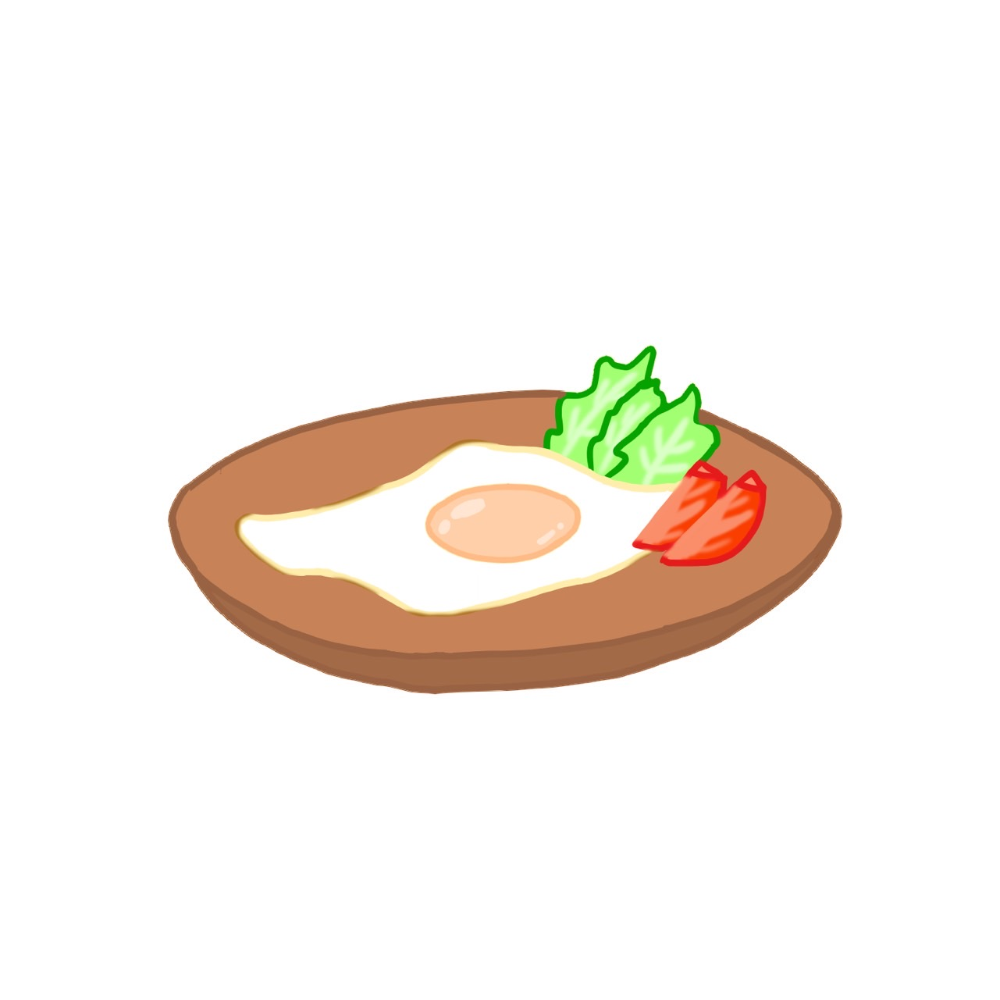

準備するもの
焼き加減を決めましょう
卵をあらかじめ器に割っておく。
直接フライパンに卵を割り入れると、黄身がつぶれたり、殻が混ざったりします。
フライパンを中火で熱し、熱くなったらサラダ油を入れる。サラダ油をなじませた後すぐに、卵を低い位置からそっと入れる。
弱火にして、ふたをせず3～5分、黄身が好みの固さになるまで焼く。白身の底をかりっとさせたいときは、最後に火を強める。
焼き上がったら、フライ返しでそっと取り出して器に盛りつけ、リーフレタス、くし形切りにしたトマトを添える。
黄身が半熟になったら裏返して10秒ほど焼き白身の両面をきっちり焼きます。ハンバーガーやサンドイッチに向いています。
水を少々入れ、ふたをして焼くと、加熱時間が短く済み、黄身にもしっかり火が通りますが、黄身の表面も加熱されるため膜が白っぽくなります。ハムエッグやベーコンエッグを作るときに向いています。